The Photo Archive
Rex
84photographs
2002–2004era
Saturdaysthe night
The page is lost; the photographs survived. Eighty-four frames of Rex on a Saturday, exactly as the camera found it.
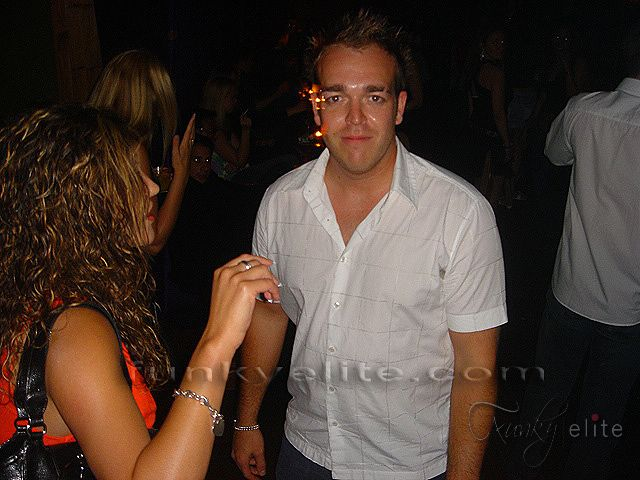
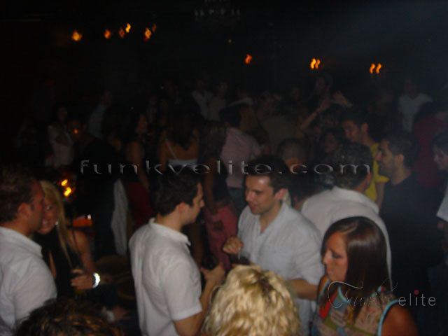
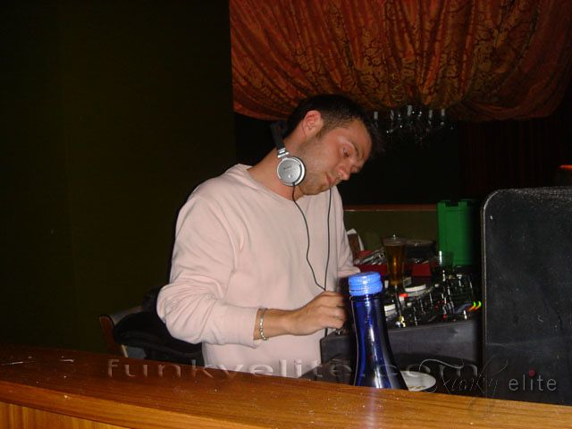
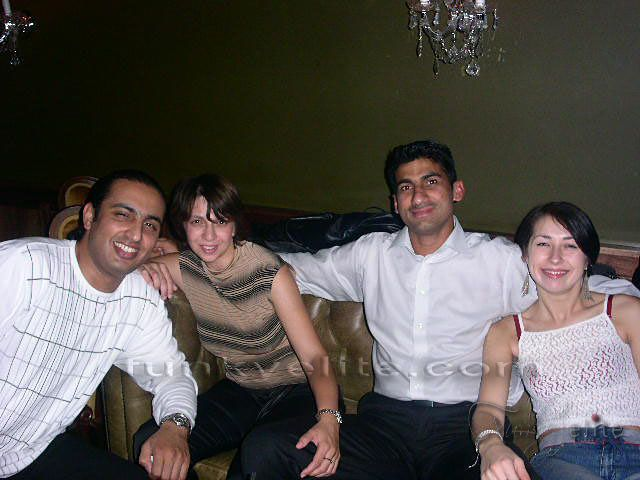
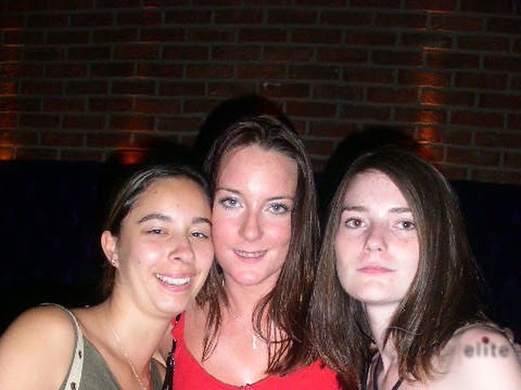
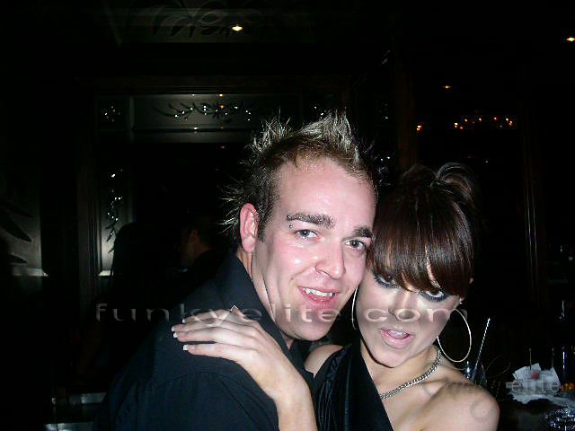
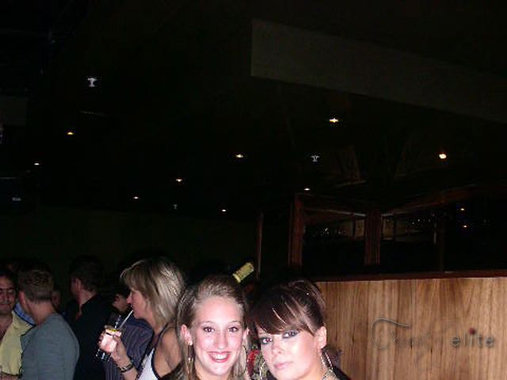
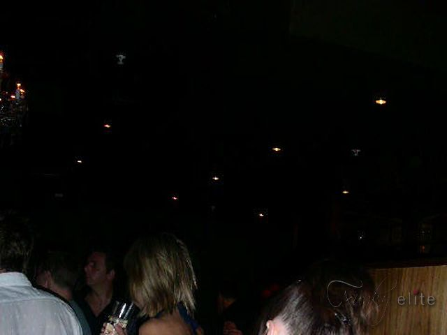
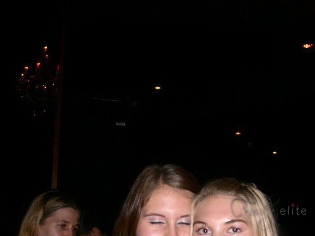
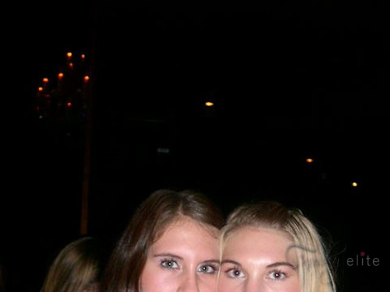
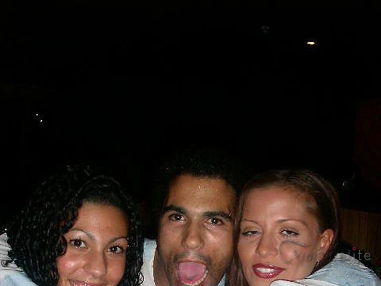
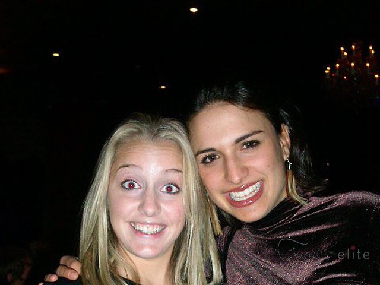
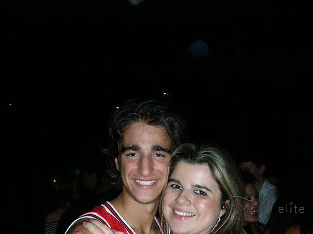
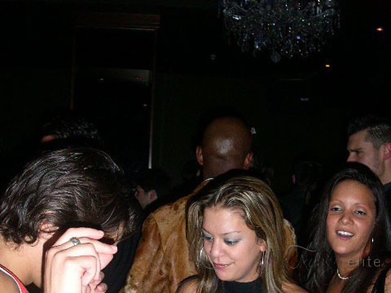
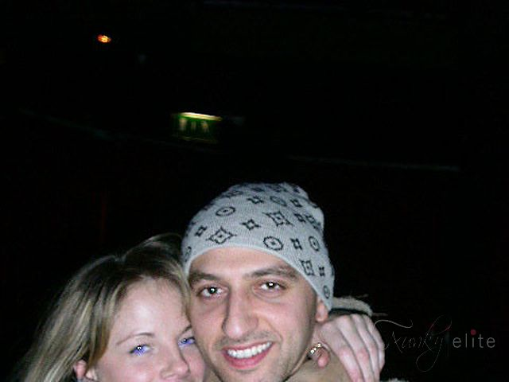
A curated selection of 84 frames — all 84 photographs live on in the FunkyElite archive.
✕‹ ›
›